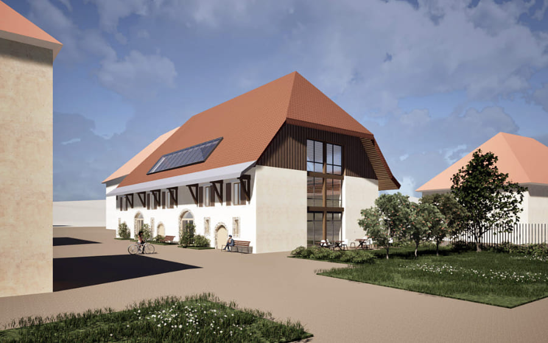
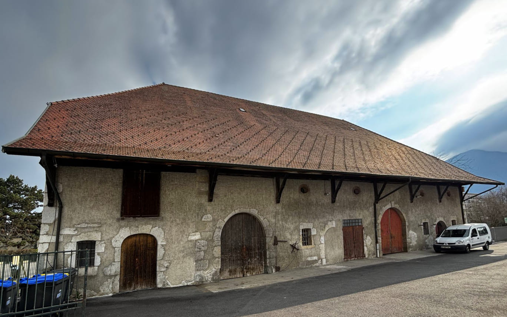

À ANNECY, QUARTIER DE NOVEL
Et si ce lieu était le nôtre ?
Devenons-en toutes et tous coopérateur·ices.
coopérateur·ices prochain palier : 1 700

La Maison Audacieuse : un lieu de vie pour prendre soin, créer du lien et bousculer les inégalités de genre.
Un lieu pour élargir la place des femmes
Aujourd'hui encore, les femmes restent plus exposées aux violences, à l'isolement et aux inégalités sociales et économiques. À Annecy comme ailleurs, les réponses existent, mais dispersées, fragmentées et rarement coordonnées.
Nous créons le lieu qui manque. Un lieu pour être accueillie, soignée, logée. Un lieu pour se rencontrer, créer du lien et faire société autrement.
- Ostaraun espace d'accueil et d'accompagnement pour les femmes victimes de violences,
- Béguinageun habitat partagé pour des femmes âgées et isolées qui choisissent la vie en communauté,
- Café des Audacieusesun café culturel et associatif ouvert sur le quartier, coworking safe en journée, rencontres en soirée,
- Maison En-Santéun pôle santé inclusif, avec des soignant·es sensibilisé·es à la santé des femmes,
- Banjoun espace de créativité et d'éveil pour les enfants et les familles.

Rénover un lieu emblématique : la Ferme de Novel
La ferme de Novel, c'est un bâtiment patrimonial du XIXe siècle, longtemps resté vacant, en plein cœur du quartier de Novel à Annecy.
Nous rénovons entièrement ce grand corps de ferme pour en faire un lieu accessible, lumineux et accueillant.
Le projet architectural préserve l'identité du lieu : ses murs en pierre et sa charpente d'origine. Tout en le modernisant pour le rendre plus accessible et performant.
La Ville d'Annecy nous confie le bâtiment pour 99 ans : le foncier ne nous coûte rien, chaque euro finance la rénovation. L'ensemble du projet de rénovation est estimé à 3,2 millions d'euros.
Découvrir le projet architecturalLa ferme aujourd'hui
Les étapes du projet
-
2025 lauréate de l'appel à projets (AMI)
de la Ville d'Annecy -
Début 2026 signature de la promesse
de bail emphytéotique de 99 ans -
Avril 2026 120 000 € de dons réunis
par plus de 650 contributeur·ices
les études démarrent -
Juillet 2026 la coopérative est immatriculée
-
Septembre 2026 lancement des parts sociales
dépôt du permis de construire -
Jusqu'au 31 décembre souscription du plus grand nombre
possible de coopérateur·ices -
Été 2027 début des travaux
Le don a lancé les études. La part sociale nous rassemble.
Le pari du bien commun
Face au repli et à l'isolement, construisons ensemble ce dont notre société a réellement besoin.
Rénover un bâtiment tel que celui-ci coûte extrêmement cher.
Dans un projet classique, nous aurions ouvert le capital à de gros investisseurs, en échange de contreparties importantes.
Pour servir l'intérêt général et garder ce lieu accessible, nous faisons le pari inverse : ouvrir le capital à une multitude de personnes qui partagent nos valeurs.
Ici, personne ne s'enrichit : la rentabilité est un seuil à atteindre, pas un objectif à dépasser.
Le pari est déjà lancé : plus de 1 700 personnes ont signé la lettre de soutien, plus de 650 ont contribué financièrement. Aujourd'hui, chacune et chacun peut participer à la création de ce bien commun.
Prendre part au projet
Vous partagez nos valeurs
et vous avez envie de soutenir le projet ?
Devenez coopérateur·ice de la Maison Audacieuse
et copropriétaire du lieu avec nous.
Chaque part sociale en appelle d'autres.
Plus nous sommes nombreux·ses, plus le projet a de poids.
- 1 part 100 €une seule suffit, on peut en prendre plusieurs
- 1 personne 1 voixquel que soit le nombre de parts
Votre argent reste le vôtre. Vous pouvez demander le remboursement de vos parts à tout moment.
Pour agir, rien de plus simple
-
Prenez votre part sociale
Quelques minutes suffisent pour devenir coopérateur·ice.
-
Passez le mot
Parlez du projet à trois personnes : c'est l'effet boule de neige qui fera naître le lieu.
-
Entrez dans la vie du lieu
En devenant coopérateur·ice, vous pouvez participer aux rencontres et aux prises de décision. Vous recevrez une invitation après votre souscription.
- Je prends ma part
Pas encore décidé·e ?
Inscrivez-vous à la newsletter pour suivre l'aventure.
Plutôt un don ?
Le don reste possible. Chaque don est doublé jusqu'au 22 septembre.
Je fais un don